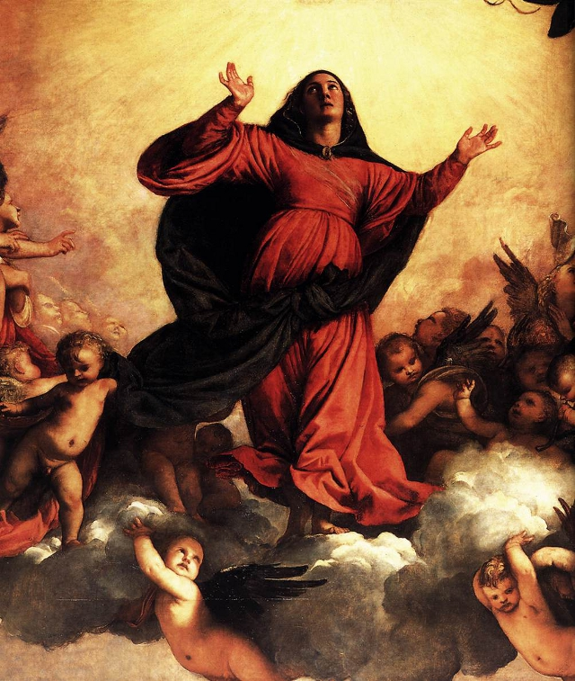

Assunta1518 - Basilica di Santa Maria Gloriosa dei Frari, Venezia Nel 1516 i francescani osservanti della chiesa di Santa Maria Gloriosa dei Frari a Venezia commissionarono a Tiziano la realizzazione della pala dell’altare maggiore, raffigurante l’assunzione della Vergine in cielo dopo la morte. Il dipinto, ultimato nel 1518 e collocato entro un monumentale arco trionfale marmoreo, costituì per la pittura settentrionale una novità rivoluzionaria dal punto di vista sia iconografico che stilistico. Nella parte inferiore vi sono gli apostoli, disposti intorno al sarcofago della Vergine, del quale si intravede solo la parte dove Tiziano ha apposto la firma e su cui è seduto san Pietro in atteggiamento agitato e commosso alla vista della Madonna che viene portata in cielo su una nube da una schiera festante di angioletti. La Vergine è accolta a braccia aperte da Dio Padre, affiancato da due angeli pronti a conferirle le corone della castità e della santità e inserito in una visione di luce dorata in cui si intravedono infinite teste di cherubini. La resa atmosferica avvolgente e le calde tonalità giorgionesche vengono applicate a una pala di dimensioni eccezionali, che non appare più al fedele come un’icona da contemplare da lontano, quanto piuttosto come una visione in atto e potentemente coinvolgente. E’ volutamente ribadita, anche nei colori e nelle pose dei personaggi, la netta divisione fra terra e dimensione sovrannaturale: nella pare inferiore le forme sono più definite e concrete, mentre nella parte superiore i contorni sono più sfumati e le cromie più calde. Le due zone sono però idealmente collegate dai gesti degli apostoli, dagli sguardi di alcuni angioletti e dai richiami cromatici: la posizione del rosso della veste di Dio, della Madonna e dei due apostoli sottostanti enfatizza la struttura piramidale e suggerisce una chiave di lettura, così come simmetrica è la disposizione dei verdi. |
| Barbiero Leonardo
Designer & Biografia leonardo.barbiero@gmail.com |
Bottin Marco
Contenuti & Revisione bottin.marco@gmail.com |
Accessibilità
 Validato CSS3
Validato CSS3
|